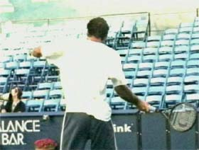
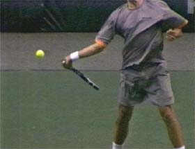
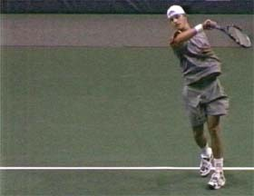
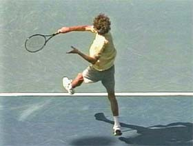
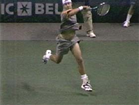

Building the Modern Forehand-Hand and Arm Rotation
Comprehensive unified tennis knowledge base — Fundamentals, Stroke Analysis, Reference Library, and more
Building the Modern Forehand:
Hand and Arm Rotation
John Yandell
After racket face angle and shoulder rotation, the third variable across the grips styles on the modern forehand is hand and arm rotation, one of the most complex and confusing technical elements in understanding and teaching the game.
This hand and arm rotation is sometimes described as the "windshield wiper" effect. In general, the more extreme the grip, the more total rotation of the hand and arm in the forward swing.
Agassi demonstrates the forward internal rotation of the arm, the so-called windshield wiper effect, the source of much of the variation-and confusion--in the modern forehand.
But individual players also have the ability to vary this rotation from ball to ball, depending on the circumstances. They increase the amount of the rotation to increase spin, to create short angles, to deal with low balls, and when they hit on the run.
They also vary the speed of the rotation. You can actually see the change by counting frames in the high speed footage. Sometimes the speed of the hand and arm rotation increases by a third or more. But the ability to vary the hand rotation can work the other way as well. Sometimes you'll see players with extreme grips rotate much less when they want to flatten the ball out.
These changes in the amount or the speed of the hand and arm rotation have a significant effect on the shape of the forward swing. They are the main cause of the wide variety of finishes and wraps we see in the forehands of the top players.
When players increase the amount and/or the speed of the hand and arm rotation this usually results in less forward and upward extension on the followthrough. Typically they don't make the basic finish position we identified in the first article.
There is also a direct relationship between the hand and arm rotation and the shape of the wrap. Basically when the hand and arm turn over more and or turn over faster, the wrap tends to move further across the body on the left side.
How does the hand and arm rotation vary with shot selection?
These myriad variations make this internal rotation tough to understand. Without a doubt it is the most complex of our three elements. It's the hardest to see clearly--even when looking at the high speed video. It's also the most difficult to integrate in teacing the other key elements in the forward swing.
The challenge here is two fold.
First is to understand how the hand and arm rotation work in the basic forehand across the grip styles.
Second, how players vary the hand and arm rotation to generate extra spin, to create angles, to deal with low balls, and/or hit on the run.
Let's look at the basic forehands across the grip styles first and try to see how this element works in the basic stroke. The easiest way to see this is to try to isolate the rotational movement independently from the other elements in the swing. Then we can put the whole motion back together and see how the hand and arm rotation integrates with the other technical components.
With an eastern grip if we isolate the arm rotation we can see that it's up to 120 degrees.
Eastern Hand and Arm Rotation
Let's look at the classical forehand first. With an eastern grip, the palm of the hand is aligned behind the racket face. This means the hand and the racket are more or less on "edge" or perpendicular to the court surface at the start of the forward swing. This also determines the position and angle of the forearm.
If you look at the forearm at the start of the forward swing, you'll see that the plane of the forearm is also something close to perpendicular to the court, or rotated slightly backwards, around 30 degrees at most.
From this position, watch the forward rotational movement. Basically the hand, racket and forearm turn over as a unit. With a classic grip the arm typically rotates until the top of the forearm is about parallel with the court, facing upwards towards the sky. This makes the total rotation somewhere between 90 degrees and 120 degrees.
With an extreme grip the arm rotation starts further back and continues further around, reaching up to 240 degrees.
Extreme Hand and Arm Rotation
Now let's see how this rotational pattern changes with the grip. Again we see that there is a continuum from the classic to the extreme grips, just as we saw with our other two factors. The more extreme the grip, the more hand and arm rotation.
With an extreme grip, the player's forearm is naturally rotated further backward at the start of the forward motion. Instead of being on edge or close to it, the forearm is rotated backward 45 degrees to 60 degrees, significantly further than the classical position.
Since the hand and arm start rotated further back, they naturally rotate further forward as the player moves through the swing pattern. Even if an extreme player stops the rotation at the same position as Sampras, he ends up with more total rotation.
But the extreme players often continue this rotating movement further past the classical position. Rather than stopping with the outside of the forearm pointing at the sky, they will continue turning the hand and arm over.


Extreme players naturally start the forward with the forearm rotated further back. Note how the inside of the forearm faces partially upward.
At times, they will continue the rotation until the top of the hand and forearm are pointing backward toward the torso. This means the total hand and rotation can be around twice as much as with a classical grip, let's say about 240 degrees, compared to around 120 degrees for a player like Pete.


With an extreme grip, the hand and arm rotation can reach up to 240 degrees with the hand actually turning backwards toward the torso.
We can see this difference clearly in the animations. But now let's look at it in the context of the actual swing patterns of the top players and see if we can identify the hand and arm rotation working in concert with everything else.
The forward internal rotation of the hand and arm is up to about 120 degrees in a classical forehand.
Watch the animation of Sampras and see how the hand and forearm turn over. The racket starts on edge. The forearm is also on edge, or rotated a little back. Basically the top of the forearm is pointing toward the back fence at the start of the forward swing. Watch it rotate over the course of the swing. At the finish, the top of the forearm is parallel with the court, and pointing up at the sky.
This is typical for the modern eastern forehand on the basic drive. The rotation of the hand and arm is, again, up to around 120 degrees. Note that Pete reaches the basic finish position as identified in the first article-wrist at eye level with good spacing between the hand and torso.
Note the rotation of Guga's hand and forearm, probably about 240 degrees.
Now let's look at the same factor in the basic drive of the players with the extreme grips. Guga probably has the most and arm rotation on a consistent basis.
Look at the angle of his forearm at the start of the forward swing. Instead of being on edge or perpendicular to the court, it's rotated further backwards. The plane of the forearm is approaching a position parallel to the court. This means that the inside of the forearm is pointing more upward at the sky.
Now look at the forearm at the finish. The top of the hand has turned over much further than Pete's so that it is pointing partially back toward his torso. As we noted, the total rotation can besomething close to double that of the classical forehand.
But again, look that Guga still makes other checkpoints for the basic finish-wrist at about eye level and the spacing between the hand and the torso, both similar to Pete. The difference is that the players with the more extreme grips have turned the hand and the arm over further when they reach this position.

Even extreme players like Roddick usually reach the universal finish position when they drive the ball.
Now that we understand how the rotation works, we can see why the finishes often appear so different on the basic drives across the grip styles. This internal rotation is an integrated, seamless element in the foreswing on both the classical and extreme grips. But it's a matter of degree. The extreme players start with the forearm rotated further back and rotate it at least as far or further at the finish.
Because of the differences in the grips, the racket ends up pointing in very different directions at the finish position. Pete's racket ends up still somewhat on edge, with the tip pointing backward and slightly to the side. Guga's racket has turned over much more and the tip is pointing toward the side fence.
These differences account for a lot of confusion in our attempts to understand the the forehand across the grip styles. Even though the finishes have critical elements in common they look quite different because of the grips and the hand and arm rotation. And after the players pass through the finish, the differences can get even more pronounced because of the differences in the wrap. As we've seen in a previous article, it's easy to miss the common finish position by placing too much emphasis on the differences in the wrap. (See the Myth of the Wrap.)
When Agassi increases his arm rotation, he often finishes across and to the side like Guga.
So these are the problems just trying to understand the basic drive, usually forehands hit from the middle of the court, or from a strong inside out position on balls comfortable in the strike zone. It can get more confusing still when the players start to vary what they do, hitting on the run, flattening the ball out more than usual, hitting with increased spin, hitting sharper angles, or dealing with low balls.
In all these cases, however, the main factor in creating the variations is the amount or the speed of the hand and arm rotation. For example, to increase the spin or hit a short angle, you'll see Agassi increase the hand rotation and finish much lower and further across his body, reaching the wrap position typically associated with more extreme grips, in contrast to the wrap on his more basic drive which is over the shoulder.
When Guga flattens out his forehand, he can finish over the shoulder like Agassi.
But you'll also see extreme grip players rotate the arm much less when they want to flatten the ball out and actually look very similar to the classical players. Guga, the master of turning the hand and wrapping on the side, occasionally flattens the ball out and finishes over his shoulder. So you have to be careful in trying to figure out what is the more basic finish and what is the variation.
Players and coaches sometimes tend to take the more extreme variations and make them into the norm. There is a real danger in looking at just one Guga forehand or one Agassi forehand or one Roddick forehand and deciding to use it as a basic stroke model.
But if we look carefully it's possible to identify what is more basic and what is more a variation due to circumstances. So let's look at these specific variations and see what changes.

John Yandell is widely acknowledged as one of the leading videographers and students of the modern game of professional tennis. His high speed filming for Advanced Tennis and Tennisplayer have provided new visual resources that have changed the way the game is studied and understood by both players and coaches. He has done personal video analysis for hundreds of high level competitive players, including Justine Henin-Hardenne, Taylor Dent and John McEnroe, among others.
In addition to his role as Editor of Tennisplayer he is the author of the critically acclaimed book Visual Tennis. The John Yandell Tennis School is located in San Francisco, California.
Source: tennisplayer.net archive — Building the Modern Forehand-Hand and Arm Rotation.docx (John Yandell teaching library, 2002-2022). Extracted and rendered as HTML for Tennis Future Lab.